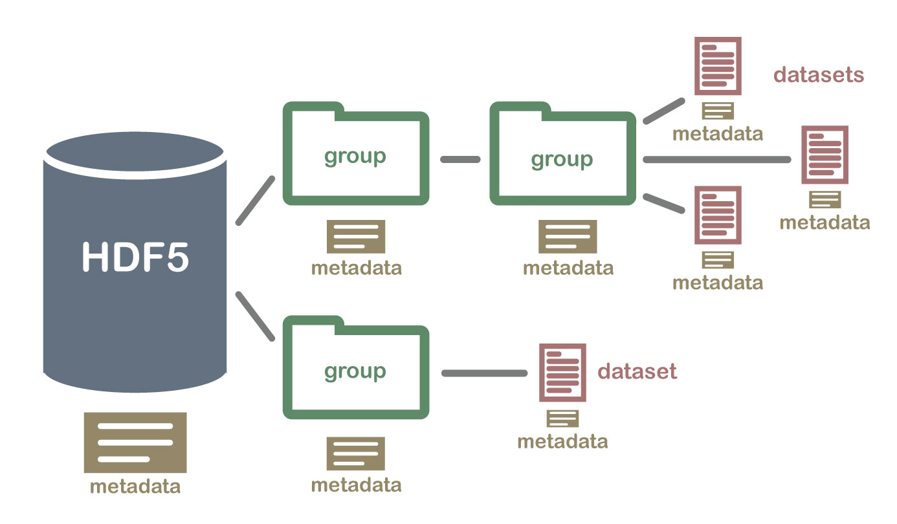

Outline
Day 1
Introduction
- Motivation
- Context
- Course overview
Jumping in
- Hello, world
- Temperature conversion
- Logistic map
Day 2
Basics of C
- Types and operators
- Control flow
- Functions
Day 3
Advanced C
- Arrays and pointers
- Structures
- Input and output
Day 4
Beyond the core of C
- External libraries
- Python bindings
- Segmentation faults
- C standards
Wrapping up
External libraries
External libraries
- There are literally hundreds of potentially useful scientific libraries
- The ones discussed here are by no means exhaustive or representative for your case
- The intention is to get a feel for how you can proceed to use libraries in general
External libraries overview
- External libraries extend C’s capabilities — especially useful in scientific computing (e.g., linear algebra, FFT, plotting)
- Common scientific libraries:
- GSL (GNU Scientific Library)
- BLAS/LAPACK (Linear Algebra)
- FFTW (Fast Fourier Transforms)
- HDF5 (Hierarchical data format)
- Benefits:
- Avoid reinventing the wheel
- Leverage optimized, tested code
- Improve performance and portability
Using external libraries
- Before you can include calls to external libraries in your code, you typically need to include relevant header files
- Header files define signatures of functions, structs, constants
- To compile code relying on an external library into an executable, you need to link that library
- Typically
-l<libname>, check library documentation - If library is not on library search path, also use
-L<path>
- Typically
Static vs Dynamic Libraries
| Feature | Static Library (.a/.lib) | Dynamic Library (.so/.dll) |
|---|---|---|
| Linking time | Compile time | Runtime |
| Binary size | Larger (library included) | Smaller (library separate) |
| Portability | Easier to distribute | Requires library on target system |
| Updates | Recompile to update | Can update without recompiling |
| Performance | Slightly faster (no indirection) | May have overhead at runtime |
GCC will do dynamic linking by default, use gcc -static for static linking
Details differ from library to library: check the specific documentation
GNU Scientific Library
- The GNU Scientific Library (GSL) provides a wide range of mathematical routines
- How to get it:
- On the cluster: load it as a module,
module load GSL/2.8-GCC-13.3.0for example - On your machine: install it as a system package,
apt-get install libgsl-devfor example
- On the cluster: load it as a module,
- How to use it:
- Include the relevant headers in your code
- Find relevant link flags with
pkg-config --libs gslfor example
By loading a module on the cluster, some variables are set to make it easier to use libraries. For instance CPATH will include the path of the header files, LIBRARY_PATH/LD_LIBRARY_PATH will include the path of the libraries.
Minimizing a function with GSL
See https://www.gnu.org/software/gsl/doc/html/min.html for documentation about one-dimensional minimization
#include <stdio.h>
#include <gsl/gsl_errno.h>
#include <gsl/gsl_min.h>
#include <gsl/gsl_math.h>
typedef struct {
double a, b, sigma;
} Params;
// Define a function f according to the GSL rules
double f(double x, void *params) {
Params *p = (Params *) params;
return exp(-p->sigma*x*x)*sin(p->a + p->b*x);
}Minimizing a function with GSL
int main() {
Params params = {0.3, 1.0, 0.05};
double minimum = -2.5, lower = -3.0, upper = 0.0;
int iter = 0, maxIter = 100, status;
const gsl_min_fminimizer_type *T = gsl_min_fminimizer_brent;
gsl_min_fminimizer *minimizer = gsl_min_fminimizer_alloc(T);
gsl_function F;
F.function = &f;
F.params = (void *) ¶ms;
gsl_min_fminimizer_set(minimizer, &F, minimum, lower, upper);
do {
gsl_min_fminimizer_iterate(minimizer);
lower = gsl_min_fminimizer_x_lower(minimizer);
upper = gsl_min_fminimizer_x_upper(minimizer);
status = gsl_min_test_interval(lower, upper, 1.0e-6, 0.0);
} while (status == GSL_CONTINUE && ++iter < maxIter);
if (status == GSL_SUCCESS) {
minimum = gsl_min_fminimizer_x_minimum(minimizer);
printf("f reached the minimum %.6f at %.6f after %d iterations\n", f(minimum, F.params), minimum, iter);
}
gsl_min_fminimizer_free(minimizer);
return 0;
}BLAS: Basic Linear Algebra Subprograms
- Low-level routines for vector and matrix operations
- Levels:
- Level 1: Vector-vector (e.g., dot product)
- Level 2: Matrix-vector (e.g., solving triangular systems)
- Level 3: Matrix-matrix (e.g., matrix multiplication)
LAPACK: Linear Algebra PACKage
- Built on top of BLAS
- High-level routines for:
- Solving linear systems
- Eigenvalue problems
- Singular value decomposition
BLAS & LAPACK
- Highly optimized for performance
- Often implemented (partially) in Fortran and assembly
- C bindings nearly always available though
- Widely used in scientific and engineering applications
- Many implementations are available
- OpenBLAS - Intel MKL - ATLAS
Link typically happens with -lblas -llapack, but this can be different for optimized implementations like OpenBLAS, Intel MKL, or ATLAS.
Dot product in BLAS
See the documentation for a description and expected parameters
#include <stdio.h>
#include <cblas.h>
int main() {
double x[3] = {1.0, 2.0, 3.0};
double y[3] = {4.0, 5.0, 6.0};
double result = cblas_ddot(3, x, 1, y, 1);
printf("Dot product: %f\n", result);
return 0;
}$ gcc dotproduct.c -o dotproduct -lblas && ./dotproduct
Dot product: 32.000000On the cluster, use module load OpenBLAS/0.3.27-GCC-13.3.0 and link with -lopenblas
HDF5: Managing Scientific Data in C
- HDF5 (Hierarchical Data Format v5)
- Designed for storing and organizing large, complex datasets
- Supports n-dimensional arrays, tables, images, and metadata
- Common in physics, climate modeling, bioinformatics, and engineering
- Features
- Portable and self-describing binary format
- Hierarchical structure: groups and datasets (like folders and files)
- Supports compression, parallel I/O, and chunking
- Library available for many programming languages
HDF5: schematic view of an HDF5 file

HDF5: writing a dataset
#include "hdf5.h"
int main() {
hid_t file_id, dataset_id, dataspace_id;
hsize_t dims[2] = {4, 6};
double data[4][6] = { /* initialize with values */ };
file_id = H5Fcreate("example.h5", H5F_ACC_TRUNC, H5P_DEFAULT, H5P_DEFAULT);
dataspace_id = H5Screate_simple(2, dims, NULL);
dataset_id = H5Dcreate(file_id, "/mydata", H5T_NATIVE_DOUBLE, dataspace_id,
H5P_DEFAULT, H5P_DEFAULT, H5P_DEFAULT);
H5Dwrite(dataset_id, H5T_NATIVE_DOUBLE, H5S_ALL, H5S_ALL, H5P_DEFAULT, data);
H5Dclose(dataset_id);
H5Sclose(dataspace_id);
H5Fclose(file_id);
return 0;
}Exercises
Solve a linear system of equations with GSL
Goal:
- Write a program that balances a chemical equation by solving a linear system of equations using GSL.
Learning outcomes:
- Learn how to call functions in GSL.
Instructions:
- Consider the chemical equation \(a C_3H_8 + b O_2 \leftrightarrow c CO_2 + d H_2O\). Write a program that determines values for a,b,c,d such that the equation is balanced (i.e., each element appears as often on the left-hand side as on the right-hand side). Make use of GSL linear algebra functions to do this.
- Bonus: Find a way to make sure the coefficients are integers